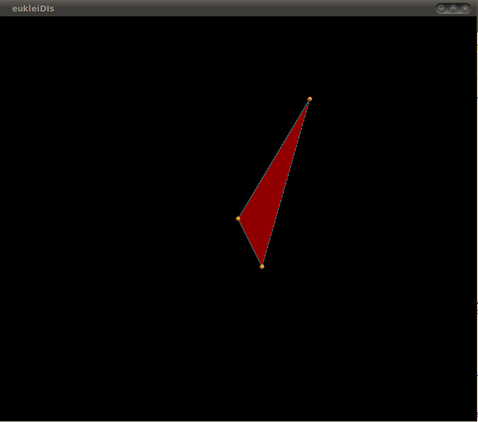
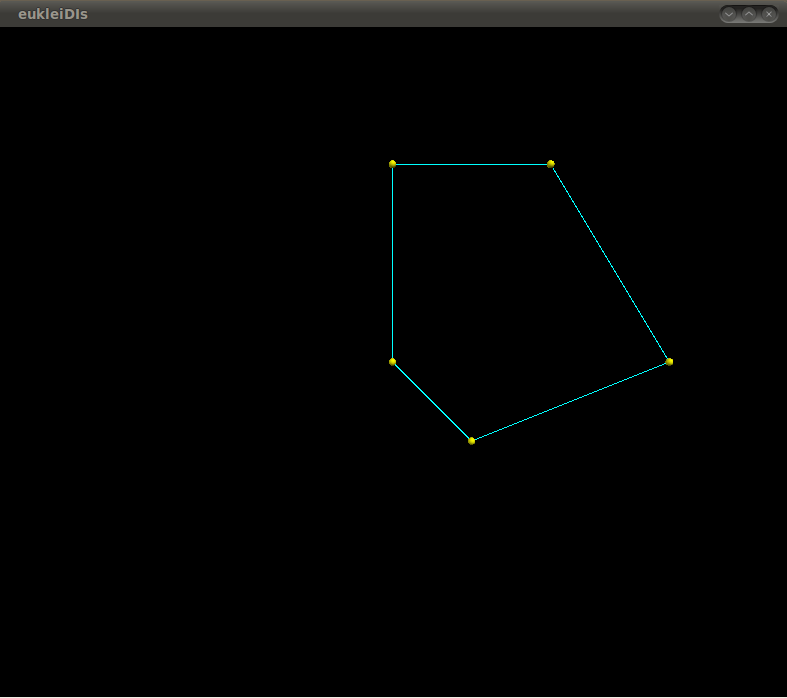

A python geometric library
EucleiDIs is a python geometric library which imitates CGAL. We are trying to have the ease of python coding with the capabilities of CGAL.
In the library section you can have a look of the classes,functions, exceptions of our library. For every class will be have all the functions properties and outputs
In the examples section you will have the opportunity to see or watch the library in action with as many examples we will be able to create
If you want to contact us do not hesitate to see in the contact us area.
The name is coming from the person whose name is strongly attached to geometry (Eucleides) and the name of our department (DI).
An object of the class Point_2 is a point in the two-dimensional Euclidean plane.
p = Point_2(x=0,y=0,color=(1,1,1),visible=True)
The contructor of the Point_2 object has as arguments the position
of the point in the 2 dimensional space, the color of which the bullet
will be colored and the visibility of the bullet.
bool p==q
Returns true if p and q Point_2 objects has the same coordinates.
Returns false otherwise.
bool p!=q
Returns true if p and q Point_2 objects has not the same coordinates.
Returns false otherwise.
bool p≤q
Returns true if p coordinates are lesser or equal than q.
Returns false otherwise.
bool p≥q
Returns true if p coordinates are greater or equal than q.
Returns false otherwise.
bool p<q
Returns true if p coordinates are lesser than q.
Returns false otherwise.
bool p>q
Returns true if p coordinates are greater than q.
Returns false otherwise.
Point_2 p+v
p is Point_2 and v is Vector_2. Returning the point obtained by translating p by the vector v.
Else raises exception.
Point_2 p-v
p is Point_2 and v is Vector_2. Returning the point obtained by translating p by the vector -v.
Else raises exception.
Vector_2 p-q
p and q are Point_2. Returning the difference vector between p and q.
Else raises exception.
float p[ int i ]
Returns the i coordinate (0≤i≤1).
float p.x()
Returns the x coordinate.
float p.y()
Returns the y coordinate.
float p.cartesian( int i )
Returns the i coordinate (0≤i≤1).
int p.dimension()
Returns 2.
sphere p.pos()
Returns the visual python object sphere that Point_2 has as representation.
void p.visual(visible=None)
If the argument ommitted then it reverses the visibility.
Otherwise makes the visibility as the argument defines.
void p.label("label")
Creates a label with the argument string for the Point_2 p.
void p.color(x=0,y=0,z=0)
If color is called as p.color() prints the color of the Point_2
If it is called with with tuple (color.green) or (256,0,0) then it changes
the color of the Point_2.
If you want to color a Point_2 black use the visualfunction(make it invisible).
An object of the class Segment_2 is a directed straight line segment in the two-dimensional Euclidean plane 2, i.e. a straight line segment [p,q] connecting two points p,q in R 2. The segment is topologically closed, i.e. the end points belong to it. Point p is called the source and q is called the target of s. The length of s is the Euclidean distance between p and q. Note that there is only a function to compute the square of the length, because otherwise we had to perform a square root operation which is not defined for all number types, which is expensive, and may not be exact.
s = Segment_2(<Point_2> source,<Point_2> target, color=(1,1,1), visible=True)
The constructor of Segment_2 class has as arguments 2 Point_2 objects for the source and target points.
Also has the color of the line will be colored and the visibility of the line.
Point_2 s.source()
Returns the source of s.
Point_2 s.target()
Returns the target of s.
Point_2 s.min()
Returns the point of s with lexicographically smallest coordinate.
Point_2 s.max()
Returns the point of s with lexicographically largest coordinate.
Point_2 s.middle()
Returns the point which is in the middle of s.
Point_2 s.vertex( int i )
Returns source or target of s: vertex(0) returns the source of s, vertex(1) returns the target of s.
Point_2 s.point( int i )
Returns the vertex(i).
float s.squared_length()
Returns the squared length of s.
Direction_2 s.direction()
Returns the direction from source to target of s.
Vector_2 s.to_vector()
Returns the vector s.target() - s.source().
Segment_2 s.opposite()
Returns a segment with source and target point interchanged.
Line_2 s.supporting_line()
Returns the line l passing through s. Line l has the same orientation as segment s.
void s.visual(visible=None)
If the argument ommitted then it reverses the visibility.
Otherwise makes the visibility as the argument defines.
void s.label("label")
Creates a label with the argument string for the Segment_2 p.
void s.color(x=0,y=0,z=0)
If color is called as p.color() prints the color of the Segment_2
If it is called with with tuple (color.green) or (256,0,0) then it changes
the color of the Segment_2.
If you want to color a Segment_2 black use the visualfunction(make it invisible).
bool s.is_degenarate()
Segment s is degenerate, if source and target are equal.
bool s.is_horizontal()
bool s.is_vertical()
bool s.has_on(Point_2 p)
A point is on s, iff it is equal to the source or target of s, or if it is in the interior of s.
An object of the class Vector_2 is a vector in the two-dimensional vector space. Geometrically spoken, a vector is the difference of two points p2, p1 and denotes the direction and the distance from p1 to p2.
v = Vector_2(<Point_2> a, <Point_2> b, visible=True)
Introduces the vector b-a.
v = Vector_2(int a, int b, visible=True)
Introduces a vector v initialized to (x,y).
v = Vector_2(float a, float b, visible=True)
Introduces a vector v initialized to (x,y).
v = Vector_2(<Segment_2> s, visible=True)
Introduces the vector s.target()-s.source().
v = Vector_2(<Ray_2> r, visible=True)
Introduces the vector having the same direction as r.
v = Vector_2(<Line_2> l, visible=True)
Introduces the vector having the same direction as l.
bool v==w
Returns true if v and w Vector_2 objects are the same object.
Returns false otherwise.
Vector_2 v+w
Addition of 2 vectors.
Vector_2 v-w
Subtraction of 2 vectors.
int v*w
V and w are both Vector_2 objects. It returns the inner product of the vectors.
Vector_2 v*<int> w
Simple scalar multiplication of the vector is returned.
Vector_2 v/<int> w
Simple scalar division of the vector is returned.
Vector_2 -v
Returns the opposite vector.
float v[ int i ]
Returns the i coordinate (0≤i≤1).
float v.x()
Returns the x coordinate.
float v.y()
Returns the y coordinate.
float v.cartesian( int i )
Returns the i coordinate (0≤i≤1).
int v.dimension()
Returns 2.
Direction_2 v.direction()
Returns the direction which passes through v.
float v.squared_length()
Returns the squared length of v.
float v.angle()
Returns the angle of v with the x axis in degrees.
An object of the class Direction_2 is a vector in the two-dimensional vector space where we forget about its length. They can be viewed as unit vectors, although there is no normalization internally, since this is error prone. Directions are used whenever the length of a vector does not matter. They also characterize a set of parallel oriented lines that have the same orientations. For example, you can ask for the direction orthogonal to an oriented plane, or the direction of an oriented line. Further, they can be used to indicate angles. The slope of a direction is dy()/dx().
d = Direction_2(<Segment_2> s)
Introduces the direction d of segment s.
d = Direction_2(<Vector_2> v)
Introduces the direction d of vector v.
d = Direction_2(<Line_2> l)
Introduces the direction d of line l.
d = Direction_2(<Ray_2> r)
Introduces the direction d of ray r.
d = Direction_2(<int> x, <int> y)
Introduces a direction d passing through the origin and the point with Cartesian coordinates (x, y).
bool d==e
Returns true if d and e Direction_2 objects has the same coordinates.
Returns false otherwise.
bool d!=e
Returns true if p and e Direction_2 objects has not the same coordinates.
Returns false otherwise.
bool d≤e
Returns true if d coordinates are lesser or equal than e.
Returns false otherwise.
bool d≥e
Returns true if d coordinates are greater or equal than e.
Returns false otherwise.
bool d<e
Returns true if d coordinates are lesser than e.
Returns false otherwise.
bool d>e
Returns true if d coordinates are greater than e.
Returns false otherwise.
Direction_2 -d
Returns the opposite direction.
float d.delta(int i)
Returns values, such that d== Direction_2(delta(0),delta(1)). (0≤i≤1)
float d.dx()
Returns delta(0).
float d.dy()
Returns delta(1).
bool d.counterclockwise_in_between ( d1, d2)
Returns true, iff d is not equal to d1, and while rotating counterclockwise starting at d1, d is reached strictly before d2 is reached. Note that true is returned if d1 == d2, unless also d == d1.
Vector_2 d.to_vector()
Returns a vector that has the same direction as d.
An object t of the class Triangle_2 is a triangle in the two-dimensional Euclidean plane. Triangle t is oriented, i.e., its boundary has clockwise or counterclockwise orientation. We call the side to the left of the boundary the positive side and the side to the right of the boundary the negative side.
The boundary of a triangle splits the plane in two open regions, a bounded one and an unbounded one.
t = Triangle_2(<Point_2> p,<Point_2> q, color=(1,1,1), visible=True)
Introduces a triangle t with vertices p, q and r.
bool t1==t2
Test for equality: two triangles are equal, iff there exists a cyclic permutation of the vertices of t2, such that they are equal to the vertices of t.
bool t1!=t2
Test for inequality.
Point_2 t[int i]
Returns vertex(i).
Point_2 t.vertex(int i)
Returns the i'th vertex modulo 3 of t.
Triangle_2 t.opposite()
Returns a triangle where the boundary is oriented the other way round (this flips the positive and the negative side, but not the bounded and unbounded side).
float t.area()
Returns the signed area of t (with the help of Heron Formula).
void t.fill(x,y,z)
If color is called as p.fill() prints the color of the Triangle_2
If it is called with with tuple (color.green) or (256,0,0) then it changes
the filling of the Triangle_2.
void t.poi_color(x,y,z)
If color is called as p.fill() prints the color of the points Triangle_2
If it is called with with tuple (color.green) or (256,0,0) then it changes
the color of the points of the Triangle_2.
void t.seg_color(x,y,z)
If color is called as p.fill() prints the color of the segments Triangle_2
If it is called with with tuple (color.green) or (256,0,0) then it changes
the color of the segments of the Triangle_2.
bool t.is_degenerate()
Triangle t is degenerate, if the vertices are collinear.
Orientation t.orientation()
Returns the orientation of t.
Oriented side t.oriented_side(<Point_2> p)
Returns ON_ORIENTED_BOUNDARY, or POSITIVE_SIDE, or the constant ON_NEGATIVE_SIDE, determined by the position of point p.
Precondition: t is not degenerate.
Bounted side t.bounded_side(<Point_2> p)
Returns the constant ON_BOUNDARY, ON_BOUNDED_SIDE, or else ON_UNBOUNDED_SIDE, depending on where point p is.
Precondition: t is not degenerate.
bool t.has_on_positive_side(<Point_2> p)
bool t.has_on_negative_side(<Point_2> p)
bool t.has_on_boundary(<Point_2> p)
bool t.has_on_bounded_side(<Point_2> p)
bool t.has_on_unbounded_side(<Point_2> p)
An object l of the data type Line_2 is a directed straight line in the two-dimensional Euclidean plane. It is defined by the set of points with Cartesian coordinates (x,y) that satisfy the equation l : ax + by + c = 0
The line splits two-dimensional Euclidean plane in a positive and a negative side. A point p with Cartesian coordinates (px, py) is on the positive side of l, iff a px + b py + c > 0, it is on the negative side of l, iff a px + b py + c < 0. The positive side is to the left of l.
l = Line_2(int a, int b, int c color=(1,1,1), visible=True)
Introduces a line l with the line equation in Cartesian coordinates ax +by +c = 0.
l = Line_2(<Point_2> p,<Point_2> q, color=(1,1,1), visible=True)
Introduces a line l passing through the points p and q. Line l is directed from p to q
l = Line_2(<Point_2> p,<Direction_2> d,color=(1,1,1), visible=True)
Introduces a line l passing through point p with direction d.
l = Line_2(<Point_2> p,<Vector_2> v, color=(1,1,1), visible=True)
Introduces a line l passing through point p and oriented by v.
l = Line_2(<Segment_2> s, color=(1,1,1), visible=True)
Introduces a line l supporting the segment s, oriented from source to target.
l = Line_2(<Ray_2> r, color=(1,1,1), visible=True)
Introduces a line l supporting the ray r, with same orientation.
bool l==h
Test for equality: Two lines are equal, iff the intersection of the lines are a line.
bool l!=h
Test for inequality.
int l.a()
Returns the first coefficient of l.
int l.b()
Returns the second coefficient of l.
int l.c()
Returns the third coefficient of l.
int l.x_at_y()
Returns the x-coordinate of the point at l with given y-coordinate.
Precondition: l is not horizontal.
int l.y_at_x()
Returns the y-coordinate of the point at l with given x-coordinate.
Precondition: l is not vertical.
Point_2 l.point(int i)
Returns an arbitrary point on l. It holds point(i) == point(j), iff i==j. Furthermore, l is directed from point(i) to point(j), for all i < j.
Point_2 l.projection(<Point_2> p)
Returns the orthogonal projection of p onto l.
Vector_2 l.to_vector()
Returns a vector that has the direction of l.
Direction_2 l.direction()
Returns the direction of l.
Line_2 l.opposite()
Returns the line with opposite direction.
Line_2 l.perpendicular(<Point_2> p)
Returns the line perpendicular to l and passing through p, where the direction is the direction of l rotated counterclockwise by 90 degrees.
bool l.is_degenerate()
Line l is degenerate, if the coefficients a and b of the line equation are zero.
bool l.is_horizontal()
bool l.is_vertical()
Oriented side l.oriented_side(<Point_2> p)
Returns ON_ORIENTED_BOUNDARY, ON_NEGATIVE_SIDE, or the constant ON_POSITIVE_SIDE, depending on the position of p relative to the oriented line l.
bool l.has_on(<Point_2> p)
bool l.has_on_positive_side(<Point_2> p)
bool l.has_on_negative_side(<Point_2> p)
An object r of the data type Ray_2 is a directed straight ray in the two-dimensional Euclidean plane. It starts in a point called the source of r and goes to infinity.
r = Ray_2(<Point_2> p,<Point_2> q, color=(1,1,1), visible=True)
Introduces a ray r with source p and passing through point q.
r= Ray_2(<Point_2> p,<Direction_2> d,color=(1,1,1), visible=True)
Introduces a ray r starting at source p with direction d.
r = Ray_2(<Point_2> p,<Vector_2> v, color=(1,1,1), visible=True)
Introduces a ray r starting at source p with the direction of v.
r = Ray_2(<Point_2> p,<Line_2> l, color=(1,1,1), visible=True)
Introduces a ray r starting at source p with the same direction as l.
bool r==h
Test for equality: two rays are equal, iff they have the same source and the same direction.
bool r!=h
Test for inequality.
Vector_2 r.to_vector()
Returns a vector that has the direction of r.
Direction_2 r.direction()
Returns the direction of r.
Ray_2 r.opposite()
Returns the ray with the same source and the opposite direction.
Line_2 r.supporting_line()
Returns the line supporting r which has the same direction.
bool r.is_degenerate()
Ray r is degenerate, if the source and the second defining point fall together (that is if the direction is degenerate).
bool r.is_horizontal()
bool r.is_vertical()
bool r.has_on(<Point_2> p)
A point is on r, iff it is equal to the source of r, or if it is in the interior of r.
An object of type Circle_2 is a circle in the two-dimensional Euclidean plane. The circle is oriented, i.e. its boundary has clockwise or counterclockwise orientation . The boundary splits 2 into a positive and a negative side, where the positive side is to the left of the boundary. The boundary also splits 2 into a bounded and an unbounded side. Note that the circle can be degenerated, i.e. the squared radius may be zero.
c = Circle_2(<Point_2> center,(int|float) squared_radius, Orientation ori = COUNTERCLOCKWISE, color=(1,1,1), visible=True)
Introduces a variable c of type Circle_2. It is initialized to the circle with center center, squared radius squared_radius and orientation ori.
Precondition: ori ≠ COLLINEAR, and further, squared_radius greater or equal 0.
c = Circle_2(<Point_2> p,<Point_2> q,Orientation ori = COUNTERCLOCKWISE, color=(1,1,1), visible=True)
Introduces a variable c of type Circle_2. It is initialized to the circle with diameter pq and orientation ori.
Precondition: ori ≠ COLLINEAR.
c = Circle_2(<Point_2> p, <Point_2> q ,<Point_2> r, color=(1,1,1), visible=True)
Introduces a variable c of type Circle_2. It is initialized to the unique circle which passes through the points p, q and r. The orientation of the circle is the orientation of the point triple p, q, r.
Precondition: p, q, and r are not collinear.
c = Circle_2(<Point_2> center, Orientation ori, color=(1,1,1), visible=True)
Introduces a variable c of type Circle_2. It is initialized to the circle with center center, squared radius zero and orientation ori.
Precondition: ori ≠ COLLINEAR.
Postcondition: c.is_degenerate() = true.
bool c==circle2
Returns true, iff c and circle2 are equal, i.e. if they have the same center, same squared radius and same orientation .
bool c!=circle2
Returns true, iff c and circle2 are not equal.
Point_2 c.center()
Returns the center of c.
int | float c.squared_radius()
Returns the squared radius of c.
Orientation c.orientation()
Returns the orientation of c.
Circle_2 c.opposite()
Returns the circle with the same center and squared radius as c but with opposite orientation.
bool c.is_degenerate()
Returns true, iff c is degenerate, i.e. if c has squared radius zero.
Oriented side c.oriented_side(<Point_2> p)
Returns either the constant ON_ORIENTED_BOUNDARY, ON_POSITIVE_SIDE, or ON_NEGATIVE_SIDE, iff p lies on the boundary, properly on the positive side, or properly on the negative side of c, resp.
Bounted side c.bounded_side(<Point_2> p)
Returns ON_BOUNDED_SIDE, ON_BOUNDARY, or ON_UNBOUNDED_SIDE iff p lies properly inside, on the boundary, or properly outside of c, resp.
bool c.has_on_positive_side(<Point_2> p)
bool c.has_on_negative_side(<Point_2> p)
bool c.has_on_boundary(<Point_2> p)
bool c.has_on_bounded_side(<Point_2> p)
bool c.has_on_unbounded_side(<Point_2> p)
An object pgn of the data type Polygon_2 is a plane figure that is bounded by a closed path or circuit, composed of a finite sequence of straight line segments.
pgn = Polygon_2(<Point_2 list> points,<Segment_2 list> segments=None, color=(1,1,1), visible=True)
Introduces a polygon pgn with vertices from the list points. The segments list can be filled with the output of getPolygon function.
bool p1==p2
Test for equality: two polygons are equal iff there exists a cyclic permutation of the vertices of p2 such that they are equal to the vertices of p1. Note that the template argument Container of p1 and p2 may be different.
bool p1!=p2
Test for inequality.
Point_2 p[ int i]
Returns the i-th vertex.
float pgn.area()
Returns the signed area of the polygon pgn. This means that the area is positive for counter clockwise polygons and negative for clockwise polygons.
int pgn.size()
Returns the number of vertices of the polygon pgn.
Point_2 p[ int i]
Returns the i-th vertex.
Point_2 p.vertex(int i)
Returns the i-th vertex.
Segment_2 p.edge(int i)
Returns the i-th edge.
Polygon_2 p.reverse_orientation()
Reverses the orientation of the polygon. The vertex pointed to by p[0] remains the same.
void p.insert(int i,Point_2 q)
Inserts the vertex q before i.
void p.insert(int i,Point_2 list q)
Inserts the list of vertex q before i.
void p.erase(int i)
Erases the vertex pointed to by i.
void p.erase(int first, int last
Erases the vertices in the range [first, last).
void p.push_back(Point_2 q)
Has the same semantics as p.insert(p.size(), q).
void p.clear()
Erases all vertices.
void p.poi_color(x,y,z)
If color is called as p.fill() prints the color of the points Triangle_2
If it is called with with tuple (color.green) or (256,0,0) then it changes
the color of the points of the Triangle_2.
void p.seg_color(x,y,z)
If color is called as p.fill() prints the color of the segments Triangle_2
If it is called with with tuple (color.green) or (256,0,0) then it changes
the color of the segments of the Triangle_2.
bool pgn.is_simple()
Returns whether p is a simple polygon.
bool pgn.is_convex()
Returns whether p is convex.
bool pgn.is_empty()
Returns pgn.size() == 0.
Orientation pgn.orientation()
Returns the orientation of pgn.
Oriented side p.oriented_side(<Point_2> q)
Returns POSITIVE_SIDE, or NEGATIVE_SIDE, or ON_ORIENTED_BOUNDARY, depending on where point q is.
Precondition: p.is_simple().
Bounted side p.bounded_side(<Point_2> q)
Returns the symbolic constant ON_BOUNDED_SIDE, ON_BOUNDARY or ON_UNBOUNDED_SIDE, depending on where point q is.
Precondition: p.is_simple().
Point_2 p.left_vertex()
Returns the leftmost vertex of the polygon p with the smallest y-coordinate.
Point_2 p.right_vertex()
Returns the rightmost vertex of the polygon p with the largest y-coordinate.
Point_2 p.top_vertex()
Returns topmost vertex of the polygon p with the largest x-coordinate.
Point_2 p.bottom_vertex()
Returns the bottommost vertex of the polygon p with the smallest x-coordinate.
bool pgn.is_counterclockwise_oriented()
bool pgn.is_clockwise_oriented ()
bool pgn.has_on_positive_side(<Point_2> p)
bool pgn.has_on_negative_side(<Point_2> p)
bool pgn.has_on_boundary(<Point_2> p)
bool pgn.has_on_bounded_side(<Point_2> p)
bool pgn.has_on_unbounded_side(<Point_2> p)
The project is held in an svn repository in code.google.com.
In order to checkout the source see the project page
With the next piece of code you can checkout a read-only working copy.
svn checkout http://eucleidis.googlecode.com/svn/trunk/ eucleidis-read-only
The first stable release can be download as a zip file.
You can find it here
If you want to contribute to the source code you can send
an email and I will grand you access to commit in the repository.
We are sorry but this class
(the vector or the direction) has no image.
This is because these classes
are only for intrenal purposes of the EucleiDIs library.
Try some other class in order to view pictures and code for this class.

from eucleidis import *
p1 = Point_2()
p2 = Point_2(1,-2)
p3 = Point_2(3,5)
t1 = Triangle_2(p1,p2,p3)
t1.area()
398.02512483510384
t1.orientation()
1
rorien[t1.orientation()]
'COUNTERCLOCKWISE'
t1.seg_color(color.cyan)
t1.poi_color(1,0.7,0.2)
t1.fill(color.red)

from eucleidis import *
p1 =Point_2()
p2 = Point_2(4,5)
p3 = Point_2(0,5)
p4 = Point_2(7,0)
p5 = Point_2(2,-2)
poly = Polygon_2([p1,p3,p2,p4,p5])
poly.poi_color(color.yellow)
poly.seg_color(color.cyan)
General information you can find in the home This library started at February of 2011 as my Bachelor thesis in the University of Athens at the Deparment of Informatics and Telecomunications. My supervisors are Ioannis EMIRIS and Christodoulos FRAGOUDAKIS. It is designed in order to be used from the students of the computational geometry course at the same department. Because the previous methods was difficult to be installed and maintained, the desicion of making a new library from scratch, was made.
We used Python because it is really easy to transform pseudo code to a well designed program ready to be executed in every machine.
I have tried to imitate CGAL because it is the best existing library we know. I tried to have the same names of the functions. Hence it will be easy for someone that had used CGAL to do the same things with this library.
EucleiDIs uses the VPython (it can be easily installed in *NIX based systems and with little effort to Windows) library to take the simple objects it needs (points as spheres, ...).
Trying to have backward compatibility with the VPython the only mouse button we use is the right one. In the newer versions of VPython the other buttons are used for altering the scene (zoom in -out, spin)
About Top